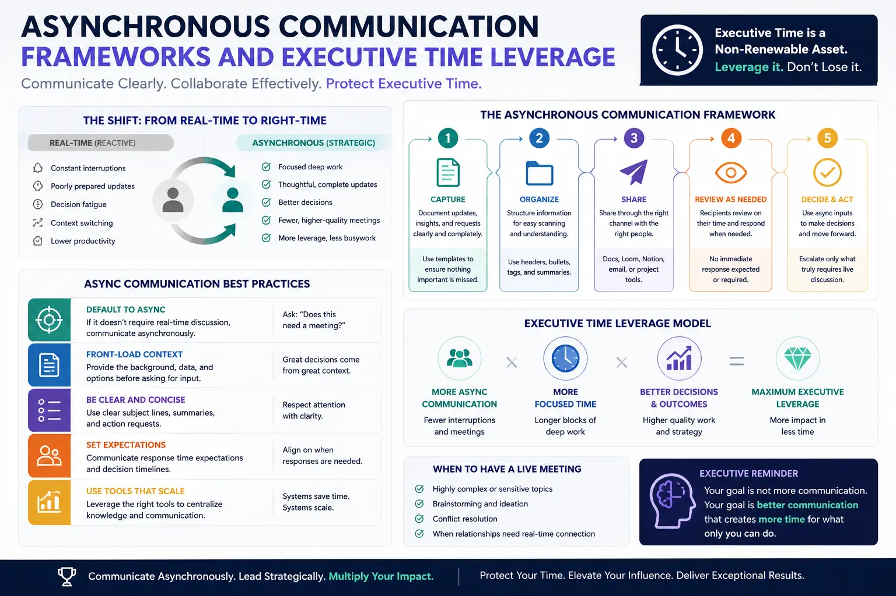
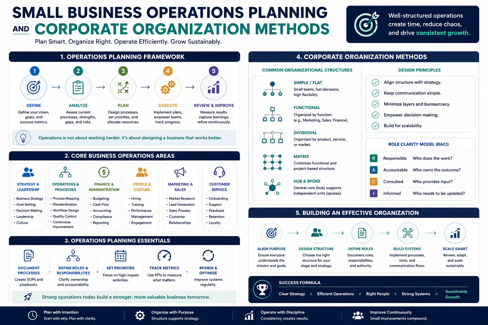

Designing Professional Development Goals That Cut Out Pointless Client Meetings
The Synchronous Drain: Why Endless Meetings Stifle Professional Development
The corporate world has long equated activity with productivity, and nowhere is this more evident than in the default reliance on synchronous meetings. For senior executives, operational directors, and founders, the calendar has become a battlefield. Back-to-back client calls, status check-ins, and impromptu alignment sessions devour the hours that should be spent on strategic planning and organizational growth. Setting structured Professional Development Goals represents the first and most critical step in breaking free from this reactive cycle. By establishing development goals around Asynchronous Communication Frameworks, leaders learn to protect their calendar, delegate routine inquiries, and focus exclusively on high-impact strategic tasks. Without clear, documented objectives focused on time defense, leaders find themselves caught in a loop of constant context-switching, where their cognitive energy is depleted before they can address long-term growth initiatives.
This meeting overload is not just an inconvenience; it is a structural barrier to leadership scaling. When an executive's day is fragmented by 30-minute calls, the brain never enters the state of deep work required to build scalable business systems. This is why establishing personal development goals for work focus is so essential. These goals force a shift in mindset: instead of viewing one's calendar as a public resource open to anyone with a booking link, the executive treats time as a finite, highly leveraged asset. To protect this asset, leaders must acquire specialized self development skills for managers, which include mastering the art of setting firm boundaries, saying no to meetings that lack a written agenda, and training clients to respect non-real-time channels. In doing so, the leader transitions from a reactive firefighter to a proactive strategist.
The economic cost of pointless meetings is staggering. In service-based organizations, high-value consulting firms, and creative agencies, senior talent is often the primary bottleneck. When a founder or director is tied up in a status meeting discussing things that could have been summarized in a three-sentence email, the business loses the opportunity to scale. This is why setting executive performance metrics must move away from input-based indicators—such as hours billed or meetings attended—and focus heavily on output, leverage, and operational efficiency. By aligning an executive's review with their ability to reduce meeting dependency, the entire organization is forced to adapt, leading to a culture that values uninterrupted execution over performative collaboration.
The Rise of Asynchronous Communication Frameworks
To successfully reduce the number of real-time client interactions, an organization must implement structured Asynchronous Communication Frameworks. These frameworks replace live meetings with organized, non-real-time communication loops. Instead of scheduling a 45-minute video call to present a design draft or operational report, the team records a short, high-fidelity video walkthrough accompanied by a detailed written document. The client can then review the progress, share it with their internal stakeholders, and provide compiled feedback on their own schedule. This simple shift eliminates the scheduling friction that often delays projects by days and frees the executive from the tyranny of the calendar.
Implementing these frameworks requires more than just installing new software; it requires a systematic change in client expectations. Clients often demand meetings because they feel a lack of control or visibility. By deploying robust corporate organization methods, such as centralized project dashboards and automated weekly status summaries, you provide clients with the transparency they crave without requiring a live conversation. This operational clarity builds trust, showing the client that their project is moving forward smoothly according to plan. As a manager, training your team to utilize these channels effectively and keep dashboards updated is a key demonstration of self development skills for managers. It shifts the burden of communication from live performance to clear, structured documentation.
Furthermore, Asynchronous Communication Frameworks foster a culture of thoughtful decision-making. In a live meeting, participants are often forced to make decisions on the spot, leading to sub-optimal outcomes. Asynchronous channels allow team members and clients to digest information, consult relevant data, and provide reasoned responses. This reduces the need for "follow-up" meetings to correct previous misunderstandings, creating a cleaner, more deliberate operational cadence. For a growing business, this level of communication discipline is the foundation of sustainable expansion, allowing the agency to scale its client roster without scaling its meeting load.
Establishing Executive Time-Leverage Targets
To ensure these practices stick, founders must set measurable Executive Time-Leverage Targets that track the proportion of deep-work hours versus meeting hours. If a founder is spending more than 20% of their time in client-facing meetings, the system is failing. The goal of setting these leverage targets is to systematically reduce meeting hours, forcing the delegation of routine inquiries and the automation of status updates.
To make these targets actionable, they must be embedded in the company's performance framework. setting executive performance metrics around time leverage ensures that directors are incentivized to protect their focus. For example, a key performance indicator (KPI) might be to reduce total monthly meeting hours by 40% while maintaining or increasing client satisfaction scores. This metric forces the manager to audit their calendar, identify recurring low-value meetings, and replace them with automated reports or delegated check-ins. When these metrics are tied to professional advancement and compensation, the organization rapidly sheds its meeting-heavy habits in favor of deep-work efficiency.
Protecting executive time is not a selfish act; it is a necessity for organizational survival. When the leadership team is buried in meetings, they cannot spot market trends, refine the company’s service offerings, or optimize operational resource design. By incorporating Executive Time-Leverage Targets into your annual Professional Development Goals, you establish a clear mandate: your job is not to be busy, but to be effective. This shift in evaluation criteria helps leaders let go of the need to be visible on every call, proving that they are acquiring critical self development skills for managers.
Time-Leverage Maximization
Setting clear Executive Time-Leverage Targets protects your calendar and reserves blocks for high-value strategic growth.
Operational Autonomy
Through structured small business operations planning, your team runs client check-ins independently using standard operating procedures.
Reduced Meeting Overhead
Implementing Asynchronous Communication Frameworks reduces the number of live meetings by up to 50% without harming client satisfaction.
Accelerated Leadership Growth
Pursuing scaling founder leadership paths transitions you from a daily operator to a visionary systems architect.

The Role of Small Business Operations Planning
Many founders and small business owners believe that they must participate in every client meeting because the client expects their personal touch. This is a symptom of poor operational design. To transition from a founder-dependent model to a scalable business, detailed small business operations planning is required. This planning involves mapping out every step of the client journey—from onboarding and asset collection to delivery and offboarding—and documenting the standard operating procedures (SOPs) for each phase. When processes are standardized, team members can handle routine inquiries and client reviews, removing the founder as the single point of contact.
By utilizing structured corporate organization methods, a small business can build an operational infrastructure that functions like a larger enterprise. This includes setting up project management systems, creating template libraries for client deliverables, and establishing clear escalation paths. When a client knows exactly who to contact for a specific issue and has access to a transparent project portal, they are far less likely to request a meeting with the founder. The system itself becomes the source of authority, allowing the founder to step back from daily delivery and focus on scaling the business.
A key part of small business operations planning is building self-service client portals. When clients can log in to view project timelines, review draft files, and submit feedback in a structured format, the need for synchronous check-in calls drops to zero. This proactive approach to client management not only saves time but also improves the client experience. They no longer have to wait for a scheduled meeting to get an update on their project; the information is available to them 24/7. This level of operational systemization is what separates a chaotic, meeting-driven agency from a calm, high-efficiency business.
Scaling Founder Leadership Paths
The ultimate benefit of cutting out pointless client meetings is the opening of new scaling founder leadership paths. When a founder is freed from the daily grind of client management and firefighting, they can step into their true role as a visionary leader. This transition requires the founder to focus on high-level relationship building, strategic partnerships, and long-term brand development. It allows them to think strategically about the future of the company, explore new revenue streams, and build the systems and team required to sustain growth.
To successfully navigate these scaling founder leadership paths, leaders must prioritize their own professional development. This involves setting personal development goals for work focus that target the transition from operator to owner. The founder must learn how to delegate authority, not just tasks, and how to lead through systems and culture rather than direct oversight. Setting clear personal development goals for work focus acts as a guide during this challenging transition. By focusing on these developmental areas, the founder builds the capacity to lead a larger, more complex organization.
Furthermore, scaling these paths requires a continuous commitment to operational refinement. As the business grows, the founder must regularly audit the operational systems and communication flows to ensure they remain efficient. This is where the integration of small business operations planning and executive development becomes a vicious cycle. The more systemized the business becomes, the more time the founder has to develop their leadership skills, which in turn allows them to build even better systems. By breaking the cycle of meeting dependency, the founder unlocks the full potential of both their business and their personal career path. By mapping out every operational process, we pave the way for scaling founder leadership paths that move the owner from day-to-day delivery to visionary steering.
Client Progress Dashboards
Utilize client portals that display project milestones, deliverables, and timelines. This eliminates status-check calls and keeps clients aligned asynchronously.
Asynchronous Video Updates
Replace live presentations with short video briefings. Clients review and compile feedback on their own schedules, eliminating back-and-forth calendar coordination.
Structured Project Boards
Organize workflows using Kanban systems. Team members update task cards, providing a clear paper trail and reducing the need for daily standup alignment meetings.

Setting Executive Performance Metrics & Corporate Organization Methods
In order to sustain an asynchronous, meeting-lite culture, the organization must establish clear structures for accountability. This starts with setting executive performance metrics that align with the company's operational efficiency goals. Leaders should be evaluated on their ability to design and maintain systems that reduce synchronous communication. If a director's department requires constant alignment meetings to get work done, it should be seen as a sign of poor systems design rather than good teamwork. By holding managers accountable for meeting reduction, the company ensures that asynchronous habits are maintained at all levels of the organization.
Additionally, the implementation of advanced corporate organization methods is crucial for maintaining alignment in an asynchronous environment. This includes establishing a single source of truth for all project documentation, defining clear guidelines for asynchronous channel usage (such as when to use Slack vs. email vs. Loom), and creating structured templates for project proposals and status reports. When everyone in the organization uses the same communication tools and protocols, the need for meetings to clarify misunderstandings is virtually eliminated. The business operates like a well-oiled machine, with information flowing smoothly between team members and clients without the need for constant, real-time coordination.
Ultimately, building a high-efficiency business requires a commitment to continuous improvement, which is achieved by scaling your Asynchronous Communication Frameworks to cover all client touchpoints. Leaders must regularly review their communication workflows, gather feedback from team members and clients, and adjust their systems as needed. By keeping a sharp focus on Executive Time-Leverage Targets and maintaining strict calendar discipline, executives can ensure they have the time and energy needed to drive the business forward. Tracking your progress against these Executive Time-Leverage Targets and maintaining alignment with your personal development goals for work focus ensures long-term accountability. This dedication to time leverage is the key to building a calm, profitable, and highly scalable business that serves both the clients and the leadership team.
To support this transition, founders should construct their own Professional Development Goals around operational resilience and time freedom. They must focus on learning how to draft comprehensive briefs, leverage recorded video responses, and establish clear guidelines for when a meeting is absolutely necessary. By structuring their development around these core disciplines, founders ensure that they do not get pulled back into the trap of daily firefighting. This is not just about time management; it is about building the mental and operational capacity required to lead a growing organization.
Furthermore, as you refine your small business operations planning, you will realize that most meetings are simply symptoms of information silos. When team members cannot find the files they need or do not understand the project scope, they request a meeting. By implementing advanced corporate organization methods and maintaining centralized documentation, you eliminate the root cause of these requests. You build an organization where information is accessible, roles are clear, and execution is the default mode. This operational clarity is the ultimate competitive advantage, allowing you to move faster and execute with greater precision.
In conclusion, the journey to cutting out pointless client meetings is a comprehensive operational and personal transformation. It requires setting clear Professional Development Goals, building self development skills for managers, and establishing robust Asynchronous Communication Frameworks. It demands that you monitor your Executive Time-Leverage Targets and hold yourself and your team accountable through setting executive performance metrics. By committing to detailed small business operations planning and implementing modern corporate organization methods, you build the foundation for scaling founder leadership paths and achieving true operational freedom. Protect your focus, invest in your systems, and let your business thrive.
Key Topics
Ready to Build Asynchronous Frameworks and Maximize Your Strategic Focus?
At The PhD Ads in Madurai, we specialize in helping founders, executives, and operational managers design and achieve their Professional Development Goals. From establishing Asynchronous Communication Frameworks and setting Executive Time-Leverage Targets to structuring small business operations planning and implementing advanced corporate organization methods, we provide the strategic guidance, coaching, and execution support you need to scale your leadership. Let us help you eliminate pointless meetings, optimize your operations, and reclaim control of your calendar.
Email: team@e2o.in